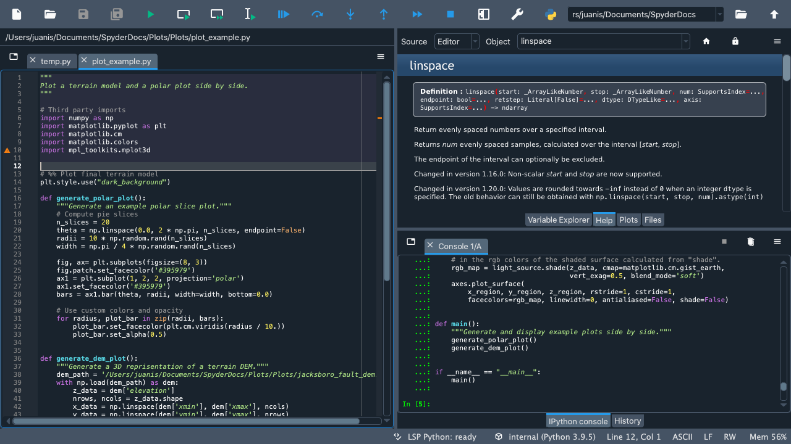

Software development#
Software development (softdev) or engineering (softeng) are the process by which we write code. There is a subtle difference between these two titles, with engineers being responsible for creating, designing, and testing the whole software application, whereas developers are responsible for a portion of that cycle. When we write code for ourselves, we are software engineers!
There are multiple processes by which software is created. Here, we’re not going to become softdevs or softengs in any meaningful way but we are going to learn some of the basics of the process, which helps us write better code.
Revision control#
We’ve already learnt one of the key tools (or if you’ve skipped to this bit, you can go back and learn about it),
which is revision control.
Rather than keep separate versions of code in separate files (which would be a nightmare for any reasonable sized application),
we keep versions of files in a revision control system. In this course we’ve learnt about git, but there are other
tools, just not as popular.
However, revision control is a tool to help development; it does not solve all problems. You can use it in a number of ways depending on the project, the number of people and the aims of the code. There is no single right way to do this and any development tools helps set up a process, but it’s humans that actually devise and use (or not!) any processes.
Simple way#
Keep all your code in a repository. Develop on the main branch only and commit changes as and when. You can add robustness by running the test suite before committing or adding the test suite to run automatically on commit (requires certain services like GitHub or BitBucket and may require money!).
More robust method#
Develop on branches. Issue a pull request when a feature is ready, tested and documented to merge it into the main branch. Set GitHub to require code review and passing of tests before a merge can happen. Even with a single person this means the main branch will always pass tests (and hence work to some standard) and gives you as the user and developer a chance to see the diff between the new and existing code.
The merge can then squash the smaller commits from the branch into a single, meaningful commit message, making your revision history much cleaner.
With teams of developers this is the preferred method and only a few individuals are allowed to merge the requests into the main branch.
Testing#
How do you know your code is correct? We test code against known answers
to make sure it is correct. A simple example is a calculator application. We can
check that if we give it 2+2 it should return 4. We can also
check the errors. In the same calculator application if we give it a+b, what
should it return? It could be an error message, it could be that it returns 15, which is doing hexadecimal arithmetic; that depends on you requirements capture (see below). We’ll cover testing in this future chapter.
Development process#
Software development goes through a number of stages:
requirements capture; what should it do?
writing code or refactoring
testing
bug fixes
client testing/approval
When writing code for yourself you are both the developer and the client. If you write code for someone else, then these roles are split.
We’ve covered testing, bug fixing and writing code elsewhere, so let’s focus on processes that can be used and the other elements that have not bee covered.
Requirements capture#
If you are going to write code it is because you want to do something. You want to be able to analyse data, merge datasets together, create animations of outputs, etc., etc. Requirements capture is a process by which we lay out what code should be able to do (and what it won’t be able to do). There are a number of ways this can happen including interviews, workshops, user observations, prototyping and use cases/scenarios. For the purposes of this course we’re going to assume you are the developer and the user so not all of these methods will be useful (unless you want to interview yourself…).
Prototyping is a useful thing when you are struggling to see what a code can or cannot do. It is often helpful to write short script with hard-coded data to try and work how to do something. The aim here is to create a realistic, but small, dataset or set-up and write code that does a single, particular thing. You can then build on that to abstract it (e.g. take user input or a file) and develop code from there. It’s often useful to then use this protype as template for a test. This way you don’t get overwhelmed in designing the whole code/software in one go, but build it up bit-by-bit as you go.
Use cases or scenarios are also really useful for the lone developer. Think about how you want to use your new software. Imagine being yourself in five years’ time writing some new code that uses this. How would you like to call functions; do names make sense; does the flow make sense? With experience this kind of thinking becomes more second nature, but writing this down in a document will help clarify your thoughts and help the logical flow of code before you start writing.
A useful technique it to also write pseudo-code or comments for the outline of various parts of your idea. This again helps point out any parts that could be functions or objects; where possible data issues might be, etc. As an example:
# Read in user data
# loop over rows in user data
# strip numbers from column 2
# add to column 3
# store in column 4
# calculate average from all of column 4 and print to screen
# create a plot of column 4/ mean of col 4 vs column 1 (time)
# and save to file
nce you have a general plan in place you can then concentrate on the how.
The above takes time but helps you write better, cleaner, more readable code. Remember not to over-engineer or start optimising prematurely. Step one is to get functional code. Then move onto readable code. Then, if the code is too slow, optimise the code. Requirements capture helps the first of those steps.
Refactoring#
Refactoring is rewriting existing code into a new design or structure. Code ultimately goes out of date. Languages eventually die off for example and code will therefore need to be moved to a new language (or version of the same language as in Python 2 to Python 3) or the libraries we depend on may become obsolete. Sometimes, greater experience means we can see how an older code can be rewritten to be clearer or faster or use less memory. Regardless of the reason code will probably need rewriting at some point.
Refactoring can be done in one of two ways: starting from scratch (but with the knowledge of what has gone before) or step-by-step. The means depends on a number of factors, but regardless one should not be afraid to start again. Your code is safe in a revision control repository and refactoring, even in a minor way, can vastly improve code.
Some techniques that can help#
pair programming: working with someone else on a problem. Take it in turns to lead (driver) and observe (navigator) and use a single computer if possible. It is possible to do this remotely too.
rubber ducking: explaining the problem to someone (or a rubber duck), even if they don’t know how to write code, often helps you come up with a solution (AI can also help here!)
code walkthrough: explain your code to someone else
code review: someone else reads through your code and checks for functionality and readability
These techniques are based around two things. First, verbalising your code to explain the logic helps you to figure out where the problem is (or might be). Second, a fresh pair of eyes can often help spot the problem; when we read we tend to skip words when we already vaguely know the content. All of the above are based on these concepts of verbalising or reading.
Practical exercise
Try either a code walkthrough/rubber ducking or a code review
Explain one of the codes you’ve written to a neighbour or an inanimate object, or ask your neighbour to review a code. Recipricate too
Development processes#
There are number of processes that have been devised to manage software projects. Here, we’ll cover two currently popular processes. Again, remember there is no right or wrong way and it depends on the project in question. Processes are human devices to manage a project and not something that should be seen as “the one true way”.
Traditional development#
A traditional software project will create a document to set out the requirements of the software. Another document will be created for the design, following discussions and prototyping. More documents will outline the tests and the test infrastructure as well as the processes and protocols. Developers can then be sent off to write individuals blocks of code or tests. A project manager overseas this and checks progress of each element and ensures they work together.
The project may be split into phases with client approval at each phase, but clients generally don’t see or interact with the code between these releases.
This is how traditional software was released; think Windows XP vs Windows 10 with bug fixes and very minor updates in between releases.
Agile development#
Agile development takes the software development process and creates a tight, rapid loop of development, which is repeated often. Rather than create an overarching requirements capture and then a grand design, you start small. You would aim to create a single feature, design it, code it, test it and get approval within a short timeframe. You then move onto the next.
Agile development has a huge advantage when a project is ill-defined (which is basically all research code as we have no idea what is needed in the future!), but comes at potential costs. With no overarching design or plan it is very difficult to give a final cost and development may go “off piste” with features that aren’t actually needed.
However, for a lone developer/user it works well, if you also have an eye on the larger picture of what you need to achieve. The documents listed above may still be needed!
This is how apps on phones tend to be managed, with small minor updates and features added relatively frequently. More larger software packages use this method now, with releases more often (ChromeOS for example).
Test-driven development#
Test-driven development turns the development cycle around to put testing up-front:
requirements capture; what should it do?
testing
client testing/approval
writing code or refactoring
bug fixes
The tests are written immediately after requirements capture and before any code is written (so the tests will all fail!). You get approval from the client that the tests meet the requirements and then write code to pass the tests. Once done, you have met the requirements.
Development tools#
One of the amazing thing about writing software is there is no “right way” to do it. You do it however you feel comfortable and productive. I use a text editor and the command line. Others use an Integrated Development Environment (IDE) which comes in various levels of complexity and features.
All IDEs are essentially a text editor with some form of hook to a compiler or runtime environment. For R and Python, which don’t need compiling, its the runtime environment option. Most IDEs have a debugger built in, along with syntax highlighting and variable/function completion.
I don’t use these tools as I often write code on HPC (High Performance Computing) platforms which generally don’t have them or they are very slow when used over internet connections. I therefore prefer to use more basic tools which will be on any computer I use. However, IDEs are very helpful: once you know how to use them well, they can make you more productive than a text editor and command line alone.
Spyder#
Spyder is an open-source cross-platform IDE. The Python Spyder IDE is written completely in Python and is designed by scientists, so is ideal for us. The interface is dvided into a few windows. On the left is the editor window where you can type code and save as a python file. On the right are two sub windows. The lower half is the Python interpreter. You can run python code directly in here. The upper part is where plots, docs and other info appears. There’s also a variable inspector and file browser you can use in this window; click the tabs at the bottom to see.
Spyder has a bunch of useful tools, including github integration and code analysis, which can make your life easier. It is worth spending a bit of time to go through the Spyder documentation and getting things set up as you want them.
RStudio#
RStudio is a free and open-source IDE for R (and Python). There are also commerical versions available. Like Spyder it includes a console, syntax-highlighting editor that supports direct code execution, and tools for plotting, history, debugging, and workspace management.

You can integrate with git and, again, like Spyder, it’s worth reading through the docs to get things set up.
Linting your code#
Linting refers to running your code through software that checks the syntax and layout/formatting of your code. The
term comes from the fluff shed by clothing, i.e. lint removes the extraneous fluff from your code. It often
points our better ways of writing functions, stylistic issues with your code and, when working in a team, checks
things are consistent across the whole team (e.g. using 4 spaces to indent, rather than some people using 3 or 2).
Both R and Python (and most other languages) have some form of lint software available. For R the
package is called lintr, for Python it’s pylint. Let’s deal with these in turn.
lintr#
lintr is used inside an R environment.
Create a file (e.g. test_lint.R) containing the following:
T_and_F_symbol_linter=function(){
list()
}
Now open R and type the following:
library(lintr)
lintr::lint("test_lint.R")
You should see something like the following output:

> lintr::lint("test_lint.R")
test_lint.R:1:1: style: [object_name_linter] Variable and function name style should match snake_case or symbols.
T_and_F_symbol_linter=function(){
^~~~~~~~~~~~~~~~~~~~~
est_lint.R:1:22: style: [assignment_linter] Use <-, not =, for assignment.
T_and_F_symbol_linter=function(){
^
test_lint.R:1:22: style: [infix_spaces_linter] Put spaces around all infix operators.
T_and_F_symbol_linter=function(){
^
test_lint.R:1:33: style: [brace_linter] There should be a space before an opening curly brace.
T_and_F_symbol_linter=function(){
^
test_lint.R:1:33: style: [paren_body_linter] There should be a space between a right parenthesis and a body expression.
T_and_F_symbol_linter=function(){
^
test_lint.R:2:4: style: [indentation_linter] Indentation should be 2 spaces but is 4 spaces.
list()
~^
test_lint.R:4:1: style: [trailing_blank_lines_linter] Trailing blank lines are superfluous.
Practical exercise
Fix the errors!
Each warning gives the line number and the change to make, so do it and remove them all.
Solution
true_and_false_symbol_linter <- function() {
list()
}
Running the lint function on that should return nothing.
pylint#
pylint is run from the command line (e.g. your Anaconda bash or the terminal emulator). Create a
file called circle.py with the following contents:
#!/user/bin/env python3
import string
PI = 3.14
class Circle:
def __init__(self,radius:int) -> None:
assert radius > 0 , \
"circle radius must be a positive number"
self.radius = radius
def area(self) -> str:
return PI * self.radius**2
def perimeter(self) -> str:
return 2 * PI * self.radius
def __repr__(self):
return f"{self.__class__.__name__}(radius={self.radius})"
Run pylint on that file in the command line:
pylint circle.py
and you should see the following output:
************* Module circle
circle.py:5:9: C0303: Trailing whitespace (trailing-whitespace)
circle.py:15:34: C0303: Trailing whitespace (trailing-whitespace)
circle.py:19:0: C0303: Trailing whitespace (trailing-whitespace)
circle.py:1:0: C0114: Missing module docstring (missing-module-docstring)
circle.py:7:0: C0115: Missing class docstring (missing-class-docstring)
circle.py:14:4: C0116: Missing function or method docstring (missing-function-docstring)
circle.py:17:4: C0116: Missing function or method docstring (missing-function-docstring)
circle.py:3:0: W0611: Unused import string (unused-import)
-----------------------------------
Your code has been rated at 3.33/10
Each line of the output contains the line and column of the file, along with a description of the warning/error.
Practical exercise
Fix the errors!
Each warning gives the line number and the change to make, so do it and remove them all.
Solution
#!/user/bin/env python3
"""
This module calculates propeties of a circle
"""
PI = 3.14
class Circle:
"""A class to represent the circle.
..........
Attributes
----------
radius: str
the radius of the Circle
Methods
-------
area():
Prints the Circle's area.
perimeter():
Prints the Circle's perimeter.
"""
def __init__(self,radius:int) -> None:
"""
Constructs all the necessary attributes for the Circle object.
Parameters
----------
radius: str
the radius of the Circle
"""
assert radius > 0 , \
"circle radius must be a positive number"
self.radius = radius
def area(self) -> str:
'''calculate the area of the circle, return the result'''
return PI * self.radius**2
def perimeter(self) -> str:
'''calculate the perimeter of the circle, return the result'''
return 2 * PI * self.radius
def __repr__(self):
return f"{self.__class__.__name__}(radius={self.radius})"
Running the pylint command on that should return nothing.
Using AI in development#
AI has great potential to help with a number of software development tasks such as refactoring, creating function templates, etc. It can also help read and understand documents, as well as help you understand code.
A number of IDEs (Integrated Development Environment) has some form of AI integrated in. However, you often need to pay for these…or pay for the AI. We can use free versions of AI to help us though. Both ChatGPT and Google’s Gemini are pretty good. We’re going to focus on Gemini here.
Using it a document explainer or searcher#
Let’s try using AI to understand some git commands. Let’s imagine we’ve been
working but want to throw all our changes away and revert the code back
to the last commit. Let’s ask ChatGPT

how do i revert a git repo to the last commit state?
- Which should return two different options:
git reset --hardgit revert
This gives us a good start, but actually doesn’t fully answer my question.
The last option of git revert reverts the last commit! It does not undo any staged
or unstaged changes. The first command does the trick but have some subtleties
about exactly what it’ll do. There are context though.
So AI helped us a bit here, but didn’t give a full answer straight off. But you can keep asking it questions to get the clarification needed. So let’s ask another question:
does git reset --hard remove unstaged changes?
And read the answer. On my answer, it also recommends looking at git stash. Let’s
continue and see what that’s about…ask about git stash
You can export your chat to Google docs or email to store it, but it will also appear on the left-hand side menu.
Let’s try this again, but let’s learn about the R package tidyverse or the Python package pandas.
First let’s explain what a dataframe is:
In tidyverse, what is a dataframe?
And then, let’s compare to pandas:
How does it differ from a pandas dataframe?
AI is a powerful tool for researching the basic concepts of new modules/libraries or ideas. It can summarise these easily and quickly to give you a good overview.
It can also help with specific questions too:
How do I use pandas to load a csv file?
Try asking that? You should get something like the following code:
import pandas as pd
# Load the CSV file into a pandas DataFrame
df = pd.read_csv('path/to/your/file.csv')
# Example with optional parameters:
df = pd.read_csv('data.csv',
header=0, # Specify the row number for the column names (default is 0)
names=['col1', 'col2', 'col3'], # Provide custom column names
index_col='col1', # Set 'col1' as the index column
usecols=['col1', 'col3'], # Read only specific columns
nrows=5 # Read only the first 5 rows
)
# Print the first few rows of the DataFrame
print(df.head())
Which is a pretty clear simple example, with a more complex one added to show more features.
Code generation#
One of the more powerful features of AI is that it can generate code. We can set specific prompts to write code to accomplish a task. Let’s try the following:
write an R function to convert centigrade to fareheit
Note, I have deliberately spelled farenheit incorrectly to demonstrate that AI understands some typos, etc.
I got the following code back:
celsius_to_fahrenheit <- function(celsius) {
fahrenheit <- (celsius * 9/5) + 32
return(fahrenheit)
}
Compare that to the code you wrote in R functions. The formula is correct etc.
Practical exercise
We can try something more complex. Get Gemini to write out code for the random number guessing game from R Exercises 2 or Python Exercises 2.
Does it work straight off? How does it compare to your hand written code?
Solution
in R can you write a number guessing game where the user has to guess a generated random number between 0 and 100. The user should have 5 tries.
# Function to play the number guessing game
play_guessing_game <- function() {
# Generate a random number between 0 and 100
target_number <- sample(0:100, 1)
# Initialize number of attempts
attempts <- 0
# Game loop
while (attempts < 5) {
attempts <- attempts + 1
# Get user input
guess <- as.integer(readline("Enter your guess: "))
# Check if the guess is correct
if (guess == target_number) {
cat("Congratulations! You guessed the number in", attempts, "attempts.\n")
return()
} else if (guess < target_number) {
cat("Too low. Try again.\n")
} else {
cat("Too high. Try again.\n")
}
}
# If the user runs out of attempts
cat("Sorry, you ran out of attempts. The number was", target_number, ".\n")
}
# Start the game
play_guessing_game()